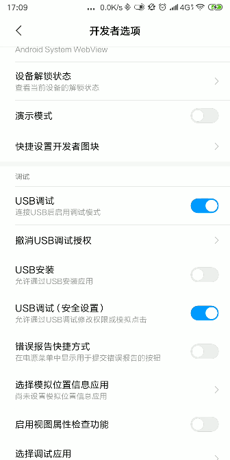
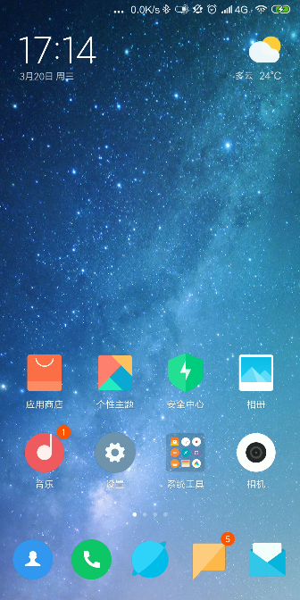

使用scrcpy控制你的手机
scrcpy可以借助adb来通过USB控制你的手机。还能对手机进行录屏，特别好玩。
安装android-tools
scrcpy需要借助adb来往手机发送命令的，因此需要先安装 android-tools
sudo pacman -S android-tools --noconfirm
安装scrcpy
sudo pacman -S scrcpy --noconfirm
手机开启USB调试功能
不同手机有不同的开启方式
我用的是MIUI10，开启方法是 "设置"->"我的设备"->"全部参数"->点击7下MIUI版本，开启“开发者选项”
然后在 "设置"->"更多设置"->"开发者选项" 中 同时开启 USB调试 和 USB调试(安全设置)

手机B连接PC
通过USB连接
推荐使用USB连接，这样操作起来比较流畅。
手机通过USB连接到PC上,在弹出的USB用途中选择 传输文件(MTP)
无线连接
- 确保PC和手机在同一Wifi中
- 手机先通过USB与PC相连
- 在PC上运行
adb tcpip 服务端口 - 拔出手机
- 在PC上运行
adb connect 手机IP:服务端口 - 运行scrcpy
运行scrcpy
运行scrcpy，第一次运行手机上会显示是否接受PC的秘钥，选择接受。
然后就能看到出现一个窗口显示手机内容了: 
scrcpy的操作说明
- 鼠标左键: 模拟点击
- 鼠标右键/Ctrl+b: 返回上一页
- Ctrl+s: 切换app
- 手机录屏: scrcpy --record file.mp4
- 帮助信息: scrcpy --help